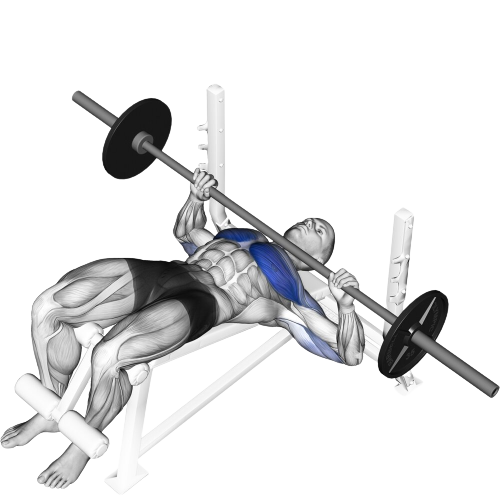
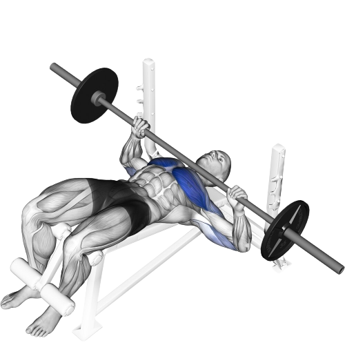

Rank
1 of 16
Dumbbell Bench Press
The greatest chest exercise of all time due to its full range of motion. Plus, you don't really get shoulder pain from this as frequent as the barbell bench press. It feels like I'm pushing all the demons away from my life. All my stress and worries are pushed into the future. This is called procrastinating. Anyways, as I near failure, my eyeballs start bulging and my arms start trembling; what a fantastic exercise.
Muscles Targeted:
Rank
2 of 16
Incline Dumbbell Bench Press
Out of all of the exercises, this is probably the one that I perform most intensely. I will admit that this geniunely burns and absolutely saps all the energy out of me, but the tingling and agonizing sensation is truly immaculate. Your chest feels like it grew ten sizes and everything you do with a chest pump just feels more exquisite.
Muscles Targeted:


Rank
3 of 16
Barbell Bench Press
The most classic exercise and a cornerstone to all of weightlifting. This was actually the very first exercise I've ever done in a gym, and the amount on instability and trembling in my arms was unreal. It felt like a magnitude 17 earthquake formed within my body, causing a tremor to proliferate to every single bone and cell in my biological system. Since then, I have a polished my form into something wonderful, but I really only do Dumbbell Bench Press now since open bench racks are getting more and more rare.
Muscles Targeted:


Rank
4 of 16
Incline Barbell Bench Press
I don't do this exercise very often since I use dumbbells instead. Pretty much all benching exercises that use barbells can be replaced with dumbbells and I do just that. I don't really believe that one is better than the other as long as you train just as intense. Although, I will note that using dumbbells will give you more range of motion and balance.
Muscles Targeted:

Rank
5 of 16
Machine Fly
I can promise you that at least 50% of all sets that I've done of this exercise has been dropsets. This machine has made me see stars and a bit crazy at times, which isn't bad at all since this indicates that the gains will in fact gain. Often times, I like to think that I am practicing for the hug that I will never receive.
Muscles Targeted:
Rank
6 of 16
Machine Chest Press
I've encountered a few terrible chest press machines. One had these handles that can spin very easily, which added so much instability to the machine. I've also encountered a few amazing, almost orgasmic machine chest presses that move in the perfect path. So, this exercise can be absolutely fantastic or simply trash depending on the machine available.
Muscles Targeted:
Rank
7 of 16
Machine Decline Chest Press
I've only encountered this machine once and it was absolutely gorgeous. There was absolutely zero shoulder pain or discomfort, and I felt like I could use my chest to the max. As in, every single muscle fiber could coordinate their duties into a single thread of pure concentation and strength. Wish I could see this machine more often; if I did, this exercise will probably higher on the list.
Muscles Targeted:
Rank
8 of 16
Machine Incline Chest Press
I have mixed feelings regarding this exercise. On one hand, it can be sensational. On the other, it can ruin the entire workout by absolutely annihilating my shoulder, typically the left one. This primarily revolves around the machine itself, but there are times where your body just needs the optimal conditions to perform. But for the most part, I train the upper chest with dumbbells, so this is not much of a worry.
Muscles Targeted:
Rank
9 of 16
Decline Barbell Bench Press
I did this exericse a couple times in memory of the decline chest press machine. Definitely not as good as the machine version, but it did remind me of how the great the machine version is. This exercise was okay overall; I didn't think much of it because I kept on thinking about how much better the machine version is. On a real note, this exercise only feels a little worse than the machine version; it is still a decent exercise.
Muscles Targeted:
 

Rank
10 of 16
Chest Dip
I will not lie, dips are pretty fun to do. However, if not warmed up properly or for whatever reasons, my shoulders and clavicles will hurt as if the bone has developed natural thorns and ripped apart the surrounding internal flesh. Also, my hand and wrists will hurt more often than my clavicles just because I'm putting my bodyweight on those joints. Then, my palm will start to itch where it was placed on the handles, and it's all just a little annoying and bothersome for me just to do this exercise. However, after all of this, I still do dips regularly, and I'll do more of them on the days that these dumb excuses are not as prevalent.
Muscles Targeted:
Rank
11 of 16
Low Cable Crossover
This is probably the only chest exercise that involves cables that I actually enjoy. To be frank, I want to do this exercise more, and I don't know why I don't. I literally have access to do this exercise, but I guess my routine is so set in place that I cannot physically control what I do in the gym anymore.
Muscles Targeted:
Rank
12 of 16
Cable Crossover
To be frank, I don't do a whole lot of chest exercises that involve cables. The first reason is that I'm using two cables which is pretty much like taking up two parking spots for one car. I try to think of others you know. I kind of feel bad since I pretty much deny someone from using the cable even though this exercise can easily be replaced by the chest fly machine. Another reason why I don't particularly like this exercise is that it is a little bit hard to set up especially if the cables are far apart.
Muscles Targeted:
Rank
13 of 16
High Cable Crossover
I've done this exercise a couple of times. During my first time, I felt like my arms could tear off my shoulders at any moment. It also feels quite unstable, and you have to position your body so that you don't fly off and get ripped in half by the cables. Or you could let go of the cables. But don't get me wrong though, this is a banger of an exercise if you know how to do it properly. I unfortunately do not know how to peform this exercise very well, and I don't have much desire to do so.
Muscles Targeted:

Rank
14 of 16
Smith Machine Bench Press
I have only done this exercise on a flat bench, but it can also be done on an incline or decline bench. However, I never really like the fixed path of a Smith Machine; free weights and barbells are always going to be superior to me.
Muscles Targeted:
Rank
15 of 16
Hex Press
Never done this exercise, but it seems a little pointless. It just drastically limits the range of motion while activating the same muscles as a typical bench press. Some might say that this targets more of the inner chest, but I don't really think that matters. As long as you train chest well, your entire pectoral muscles should develop.
Muscles Targeted:
Rank
16 of 16
Dumbbell Fly
The only reason why you should do this exercise is if the machine fly is not available. Even then, I would still wouldn't do this exercise; it just feels wrong. Maybe I'm just built wrong. But at the same time, I don't ever see anyone doing this exercise, especially when most gyms have chest fly machines.
Muscles Targeted: